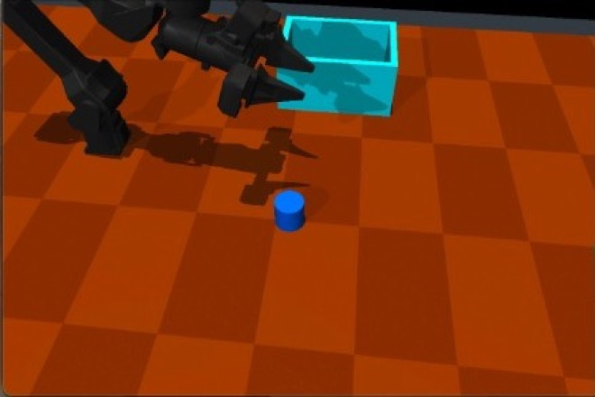
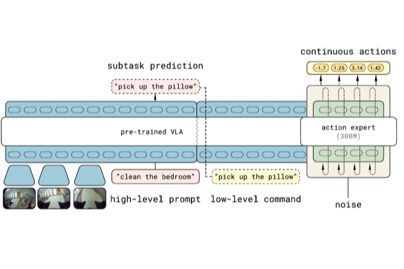
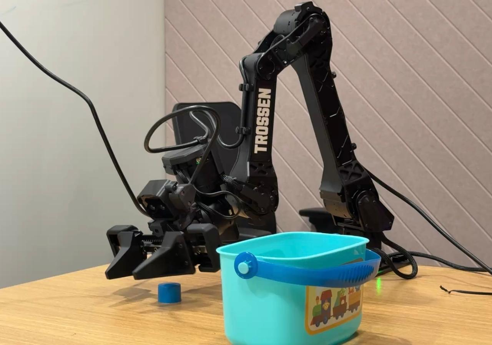

|
Faheem Nizar I'm a Senior Associate (Data Scientist) at PwC US in Bengaluru. I work with PwC's advisory teams to build AI and machine learning solutions. I also drive PwC's Physical AI Lab, where we fine-tune and test vision-language-action models on WidowX arms and run assurance/safety tests on robot policies. I did my B.Tech in Electrical Engineering, with a minor in Machine Learning, at IIT Kanpur. There I worked with Soumya Dutta on uncertainty in deep image synthesis, with Tushar Sandhan on graph deep learning for fault prediction, and with Abhishek K. Gupta on UAV antenna tracking as a SURGE scholar. Outside of work, I voraciously read about history, cook some neat recipes, and travel to some really underrated places. |

|
ResearchI work mostly on agentic AI, especially LLM multi-agent systems and hosted agents. I have studied how to retrieve the right tool or agent for a query, how prompt caching affects cost and latency over long agent sessions, and how tool selection works in production systems. I also work on physical AI. In our lab I fine-tune vision-language-action models on robot data we collect ourselves, and I use LLM agents to red-team robot policies by searching for the scenes where they fail before deployment. The common thread is reliability. Whether it is an agent picking the wrong tool or a robot policy in an unfamiliar scene, I want to know when a learned system is likely to fail and how to make it more dependable. This interest started with my undergraduate work on uncertainty in neural networks. |
Publications |

|
TRIAL: Agentic Red-Teaming for Physical Safety in Robot Foundation Models
Anonymous submission Under review, 2026 TRIAL uses LLM strategists and MAP-Elites to search over visible and hidden scene factors, such as object mass, placement, and lighting. Across four robot policies it finds many rollouts that complete the task but break a safety constraint, which a success-only benchmark would miss. |

|
Agent-as-a-Graph: Knowledge Graph-Based Tool and Agent Retrieval for LLM Multi-Agent Systems
Faheem Nizar, Elias Lumer, Anmol Gulati, Pradeep Honaganahalli Basavaraju, Vamse Kumar Subbiah ICAART, 2026 paper / arXiv We put tools and their parent agents into one knowledge graph. Vector search finds candidate tools and agents, weighted rank fusion reranks them, and graph traversal maps tools back to their agents. This raises Recall@5 by 14.9% over prior retrievers on LiveMCPBench. |


|
Visual Analysis of Prediction Uncertainty in Neural Networks for Deep Image Synthesis
Soumya Dutta, Faheem Nizar, Ahmad Amaan, Ayan Acharya IEEE TVCG, 2024 paper / arXiv We compare deep ensembles and MC-Dropout for estimating per-pixel uncertainty, error, and sensitivity in volume-rendered image synthesis. An interactive tool lets users explore these estimates across all viewpoints. |
| View all publications → |
Projects |
|
  |
Fine-Tuning π0.5 on a Custom WidowX Dataset
PwC US, 2026 dataset episodes / π0.5 paper I recorded 70 teleoperated pick-and-place episodes on a WidowX arm and fine-tuned π0.5 on them with LoRA, then tested the checkpoints in a MuJoCo scene. Hover to see the simulator. more |
|
 |
Stress-Testing Robot Foundation Models
PwC US, 2025 to present I benchmark open-source VLA policies and use LLM agents to suggest new scenarios where they might fail. Each policy gets a written report of its failure modes. This work led to a physical AI lab with WidowX arms and dedicated GPUs. |

|
Text-to-3D Character Motion Generation
PwC US, 2025 STMC code / STMC project page A system that generates 3D character motion from text prompts for a gaming client. It builds on STMC, which lets several text prompts run on a shared timeline, so a character can walk, raise a hand, and wave at overlapping times. It lowers the motion-capture cost of animating NPCs. |

|
GenCast Hurricane Forecasting
FutureSprint Hackathon, 2025 GenCast paper GenCast is a diffusion model that forecasts the weather by refining random noise into a full global weather state, one step at a time. I ran the GenCast mini ensemble on ECMWF data to forecast 15-day hurricane tracks, mapped the tracks to affected zip codes, and generated reports for stakeholders with a web-search agent. |

|
Real-Time UAV Antenna Tracker
SURGE, IIT Kanpur, 2022 A system that keeps long-range, low-latency links between UAVs and a ground station. It uses MAVLink telemetry over ESP-NOW, a self-healing BATMAN mesh on Raspberry Pis, stepper motors driven by a Pixhawk, and YOLOv5 to track the drone visually at short range. |
Experience |

|
Senior Associate, Data Scientist
PwC US, 2024 to present |
|
|
Data Analyst Intern
American Express, 2023 |
AwardsAcademic Distinction, IIT Kanpur, 2024: Given for excellent academic performance. First Place, IoT Innovation Contest, PwC FutureThink Cloud Innovation Summit, 2024: IoT kiosk that combined face detection with a conversational assistant. SURGE Scholar, IIT Kanpur, 2022: Summer research fellowship, worked on the UAV antenna tracker project. All India Rank 1136, JEE Advanced, 2020: Rank in the JEE Advanced examination. |
|
Website template from Jon Barron. |